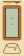
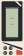
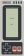
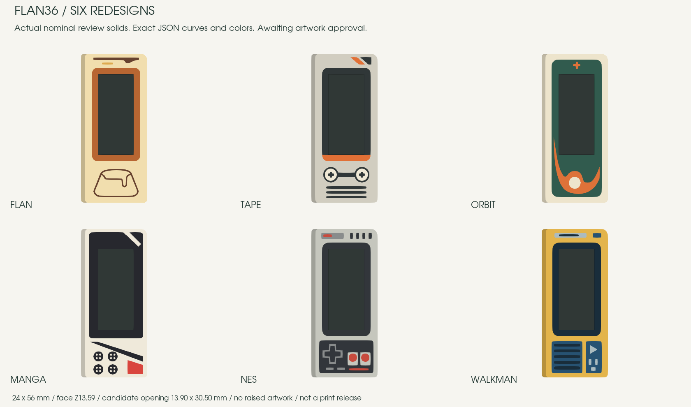

New direction for Flan
Caramelo
An espresso screen surround, broad caramel pool and the original outline mark reversed into the glaze. A warm dessert object, without a badge.
#F4DEAB#502E28#AE592F#D59A4DCaramelo, Lucha, Hanafuda, Mecha, Cartucho 8 and Terminal. New artwork on the same slim 24 × 56 mm frame, with solid colors and flush details.
Tap a frame to enlarge it. Each drawing has exact dimensions, HEX colors and matching editable 3D geometry. The main keyboard assembly still uses the existing artwork.

An espresso screen surround, broad caramel pool and the original outline mark reversed into the glaze. A warm dessert object, without a badge.
#F4DEAB#502E28#AE592F#D59A4DCobalt wrestling-mask graphics: twin brow flashes, long red cheek stripes and a cream mouth guard. The display becomes part of the mask.
#2448A7#F6EAD1#DA4D3D#182E53A lacquer-card landscape: vermilion sun above an ink mountain, ivory snowcap and pine-green foothills. Broad color regions keep the tiny landscape legible.
#F1E7D2#252B2E#D84932#456348
An original robot faceplate: gold V crest, red armor slashes, broad vent panel and angular chin. Every detail remains flush.
#E7E6DA#293746#C7473C#D8AE4A
The whole frame reads as a game cartridge: red label header, molded-looking side ribs and a gold contact bank. No miniature controller.
#CBC8BB#30343B#B9433C#CFA552A compact cyberdeck in sage, graphite and acid yellow: offset header, circuit-like side rails, terminal prompt and a large orange return key.
#DCE0D5#283E38#C6D75A#DF7C4EThese renders come from the actual review solids. Each material’s top surface is checked against its source paths, so approval fixes the shapes and palette rather than leaving them to reinterpretation.

The existing mechanical blank is unchanged: a 13.90 × 30.50 mm opening, 0.10 mm nominal glass clearance and a frame face at Z13.59 mm. Every screen bezel is an exact 2.40 mm outward offset.
The preview cards show the modeled LCD footprint with illustrative content. The solid render shows the opaque glass model. Neither paints over missing frame material.
Target: 0.4 mm nozzle and 0.2 mm layers. These are review files, not a print release. Thin tips, color bonding and physical fit still require a sliced sample.
R5 was rejected. Its frozen files remain available as history. R6 requires approval before integration.
Master SHA256: a599069941fbbafd06ac4aebb62501df3fa6af2ebb8d7aaf228051f659d5b1d2